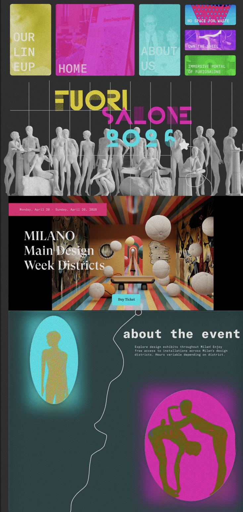

Fuorisalone Website
Link to Figma ↗A group project of 6, where I led the overall concept development, designed the first page,
supported teammates across other sections, and built the interactive prototype.
A group project of 6, where I led the overall concept development, designed the first page,
supported teammates across other sections, and built the interactive prototype.

The goal was to present a rich lineup of immersive installations through expressive typography, vivid colour, and distinctive navigation that makes the event's creative energy feel present on screen.
Design event websites often fail to convey the energy and diversity of physical installations. Standard, safe layouts don't match the experimental nature of cultural design events. Users need an engaging way to explore a varied lineup of exhibitions while still being able to navigate the site with clarity and ease.
A bold, block-style navigation system with vivid colour identity for each section, making browsing feel intentional and aligned with the brand's avant-garde character.
A dark, high-contrast design system, drawn from gallery and print aesthetics - creates atmosphere and elevates the featured installations without distracting from the content.
Hover states reveal additional context for each installation, encouraging discovery and layering information progressively without overwhelming the initial view.
A dedicated "Our Story" section uses archival photography and structured text to build historical depth around Fuorisalone, giving users context for the brand before they explore the lineup.


Leading the concept for a team of six taught me how to communicate design decisions clearly so others could build on them confidently. Establishing the visual direction early, the editorial layout, dark colour system, and navigation logic gave the team a shared foundation, and supporting different sections helped me see the design from multiple perspectives. Building the interactive prototype deepened my understanding of how hover states and transitions can layer information progressively without cluttering the interface. Overall, this project sharpened both my design leadership and my ability to collaborate within a structured, fast-paced team environment.
1 LandingPage Example
